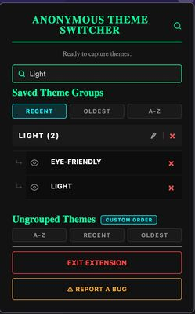
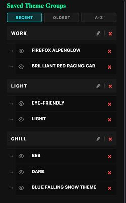

Anonymous Theme Switcher Published
A Firefox extension that organizes your installed browser themes into named groups, with search, sorting, and live previews when you hover over a theme. Switching themes takes one click. It's live on Firefox Add-ons, with 45 Jest unit tests and a GitHub Actions CI pipeline.
What I built
- Theme detection and grouping with the WebExtensions management API, saved across browser sessions
- Live hover previews that restore your original theme on mouse-out, with click-to-lock logic